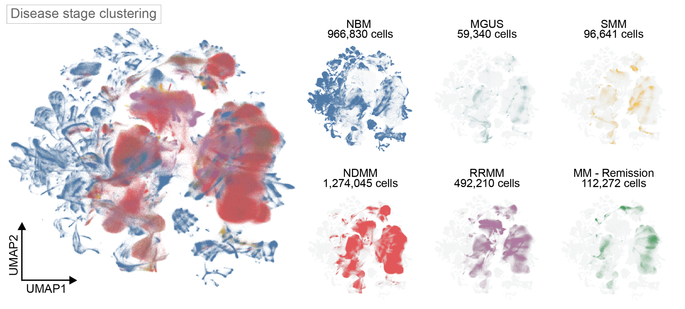
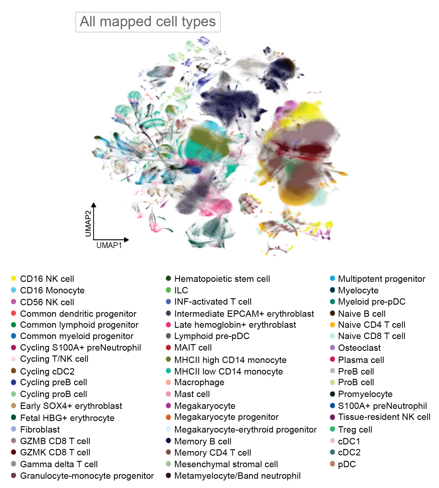
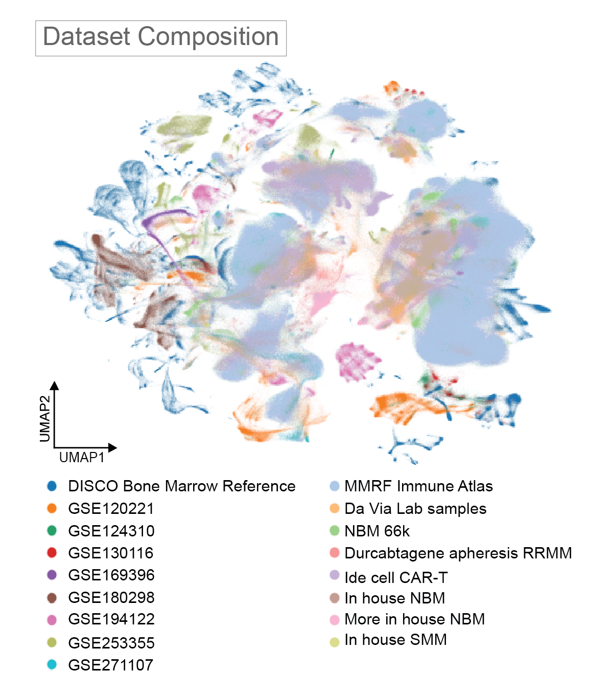
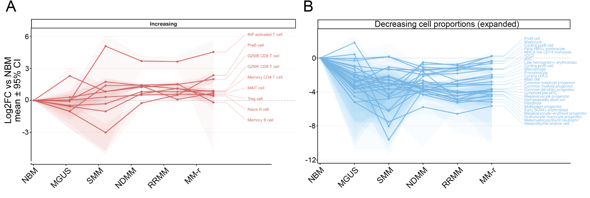
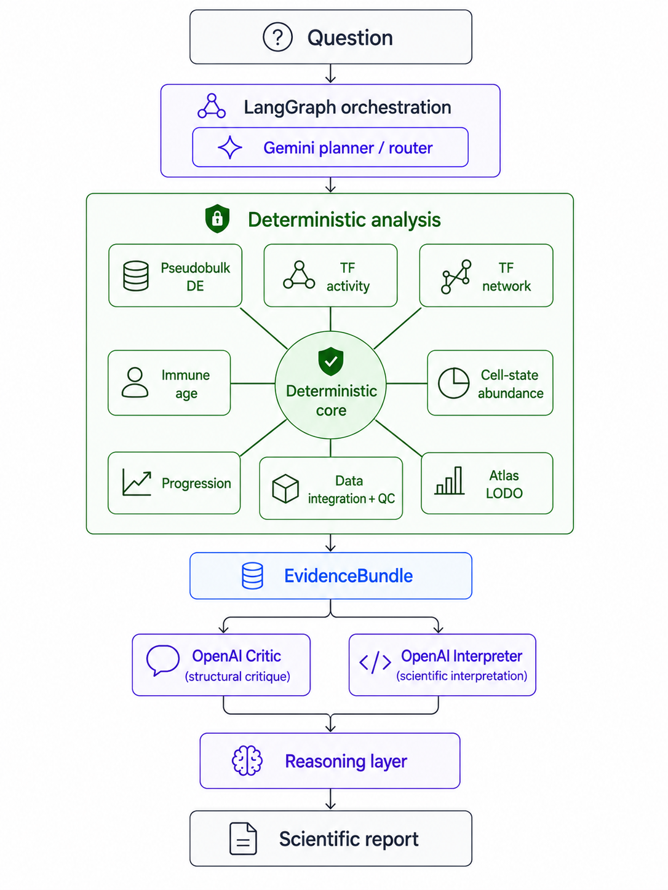
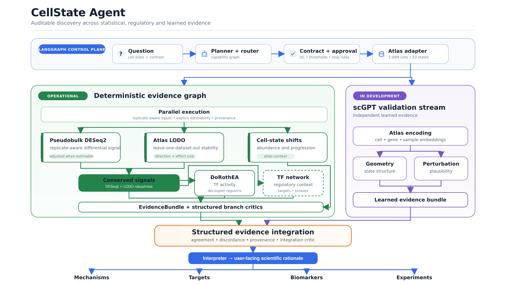
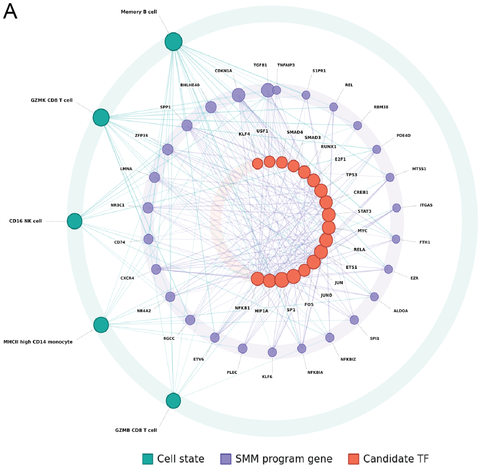

01
Capabilities and readiness
Available workflows, required inputs, and readiness before execution.
Research software
A LangGraph system that turns biological questions into reviewable analysis plans. Deterministic nodes run the science; language models plan, critique, and interpret.
Start with the data
Before testing a contrast, the system checks the available data, cell-state definitions, cohort structure, and biological replication.



Normal Bone Marrow versus Newly Diagnosed Multiple Myeloma is a multi-cohort contrast. Replicates, dataset structure, cell thresholds, and cross-dataset stability must be checked first.

Scientific question
GZMB CD8 T cells increase across the myeloma spectrum, motivating a replicate-aware analysis of their transcriptional state.

How the system works
Gemini builds a typed plan. The system exposes the contrast, replicates, estimability, confounding, thresholds, and requested capabilities. LangGraph executes only after approval.
DE, LODO, TF activity, networks, abundance, progression, immune age, and QC run as fixed functions. The agent selects valid combinations; it does not rewrite the methods.
Results enter an EvidenceBundle with warnings, provenance, and artifacts. The OpenAI critic and interpreter review the evidence after analysis and cannot alter the statistics.
Recorded demo
Three short clips show capability discovery, approved execution, and report review.
Available workflows, required inputs, and readiness before execution.
A natural-language request becomes an approved contrast, design, robustness policy, and capability graph.
Review results, caveats, provenance, figures, and the final report.
Review the design, results, figures, warnings, and provenance.
Forward-looking capabilities
Each request becomes an approved typed plan executed through LangGraph.

Resolve the cell state, groups, contrast, capabilities, and intent.
Expose replicates, thresholds, estimability, confounding, and stop conditions.
Run pseudobulk DE, LODO testing, and signed TF inference.
Package results, warnings, and provenance for critique and interpretation.
Generalist agents, internal models, and foundation models can add context or representations. CellState Agent connects them to deterministic execution, provenance, and robustness testing.
Scientific capabilities
Stable IDs internally; plain language in the interface.
Replicate QC, design checks, DESeq2 inference, artifacts, provenance, and caching.
CAP-DESEQ-003DoRothEA and CollecTRI inference with coverage checks, consensus, and discordance.
CAP-TF-002scGPT representations and perturbational plausibility as evidence alongside classical inference.
LEARNED VALIDATION STREAM
Mechanistic context
DE and LODO identify stable signals. Signed regulons test TF direction. Networks place regulators in program context.
Reusable scientific infrastructure
Encode trusted methods as tested capabilities with explicit contracts, benchmarks, provenance, and limits.
The larger idea
Strong analyses should not end as one-off notebooks. Their assumptions, checks, outputs, and limits should carry forward.
Connect data, methods, and agents through explicit inputs, assumptions, outputs, and stop conditions.
Keep replication, confounding, robustness, and provenance visible through interpretation.
Generalist agents, internal models, and foundation models can contribute evidence within the same reviewable structure.
Each validated node expands what the system can answer without changing its standards.
The value is to automate cannonical workflows while preserving the scientific rigor and interpretability of the analysis -